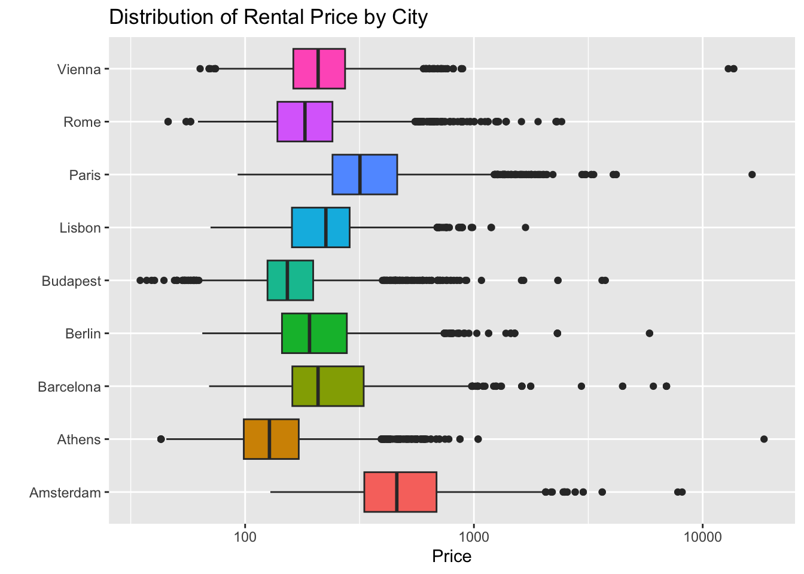
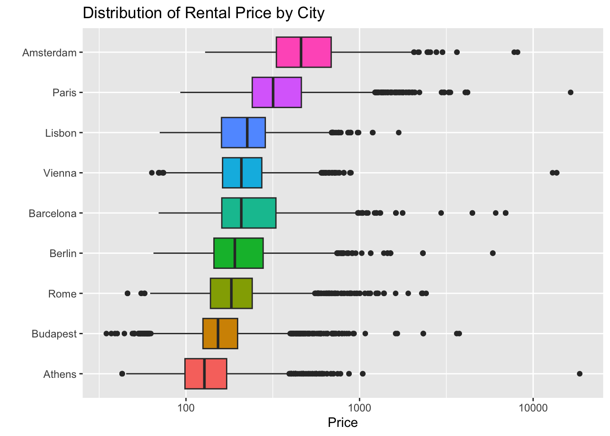
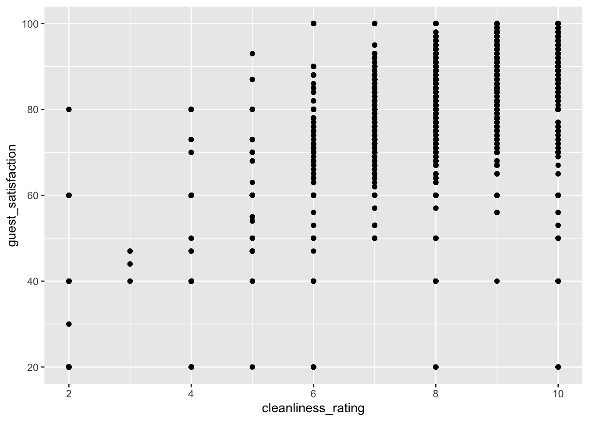
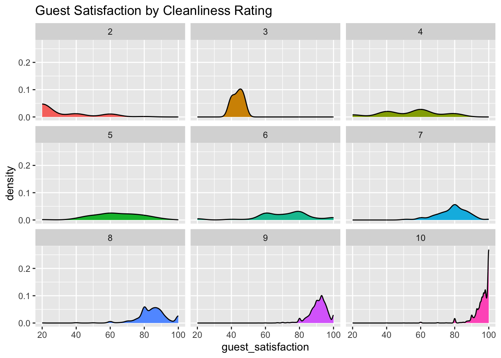

(You don’t need to copy this part, but you can if you want!) Your goal during today’s class meeting is to recreate this Quarto document as closely as possible. For starters, I’ve used theme: flatly in the YAML header, so this should get your fonts and color scheme aligned with my document. The sections below get progressively more difficult to replicate, as they use more advanced functionality. Levels 1 and 2 contain the baseline functionality you’ll want for our course, while Levels 3 and 4 show some advanced things you can do to improve your documents. It is unlikely that you’ll replicate the entire document successfully, but see how far you can get. I’ll share the source code with you after our class meeting.
Level 1
Let’s start by loading our libraries and reading in our familiar AirBnB data.
library(tidyverse)
── Attaching core tidyverse packages ──────────────────────── tidyverse 2.0.0 ──
✔ dplyr 1.1.4 ✔ readr 2.1.5
✔ forcats 1.0.0 ✔ stringr 1.5.1
✔ ggplot2 3.5.1 ✔ tibble 3.2.1
✔ lubridate 1.9.3 ✔ tidyr 1.3.1
✔ purrr 1.0.2
── Conflicts ────────────────────────────────────────── tidyverse_conflicts() ──
✖ dplyr::filter() masks stats::filter()
✖ dplyr::lag() masks stats::lag()
ℹ Use the conflicted package (<http://conflicted.r-lib.org/>) to force all conflicts to become errors
library(kableExtra)
Attaching package: 'kableExtra'
The following object is masked from 'package:dplyr':
group_rows
Rows: 41714 Columns: 19
── Column specification ────────────────────────────────────────────────────────
Delimiter: ","
chr (3): City, Day, Room Type
dbl (13): Price, Person Capacity, Multiple Rooms, Business, Cleanliness Rati...
lgl (3): Shared Room, Private Room, Superhost
ℹ Use `spec()` to retrieve the full column specification for this data.
ℹ Specify the column types or set `show_col_types = FALSE` to quiet this message.
Now that the data is read into our notebook, here is a list of our available column names.
Paris has the lowest average bedroom metric and the second highest average price! Athens has the highest average cleanliness rating and the highest average guest satisfaction – it’s also got the lowest average price. Let’s look at the distribution of average price by city.
airbnb %>%ggplot() +geom_boxplot(aes(x = price, y = city, fill = city),show.legend =FALSE) +labs(title ="Distribution of Rental Price by City",x ="Price", y ="") +scale_x_log10()

Here’s a slightly better version of that plot.
airbnb %>%group_by(city) %>%mutate(med_price =median(price) ) %>%ungroup() %>%mutate(city =fct_reorder(city, med_price) ) %>%ggplot() +geom_boxplot(aes(x = price, y = city, fill = city),show.legend =FALSE) +labs(title ="Distribution of Rental Price by City",x ="Price", y ="") +scale_x_log10()

Some of the things in this section weren’t excellent.
There are lots of messages and warnings printed out near the top of our document – this is distracting!
Speaking of distracting, the code is showing up here too – we work hard on our code, but its unlikely that the person reading this document will want to sift through all of it
We’ll try to fix them in later parts of the document.
Level 2
In this section, we’ll continue to analyze our AirBnB data, but we’ll make several improvements.
We’ll use font-formatting to highlight items by making them appear in italics, bold, or code font
We’ll add hyperlinks to our document as external references
We’ll hide the code from the reader so they don’t get distracted by it
Now that you’ve successfully created a numbered list, some different font stylings, and added hyperlinks, let’s get back to our analysis. I wonder if there is an association between cleanliness_rating and guest_satisfaction. Since both of these variables are numeric, I’ll use a scatterplot to explore visually. I’m going to hide the code this time by using a chunk option. We can add chunk options to the top of a code chunk by using the “hash pipe” operator #| – a list of permissible chunk options is available here. The ones we’ll use most often are echo, eval, message, warning, and code-fold. The chunk option we want for this application is to set #| echo: false

That plot doesn’t look so great – cleanliness_rating seems to be discrete, perhaps we’d be better off treating that variable as categorical and producing side-by-side boxplots, faceted densities, or faceted histograms. I’ll produce the faceted densities – since that plot is harder to construct, I’ll fold the code with the chunk option #| code-fold: true so that you can see it, rather than using #| echo: false.
Code
airbnb %>%mutate(cleanliness_rating =as.factor(cleanliness_rating)) %>%ggplot() +geom_density(aes(x = guest_satisfaction, fill = cleanliness_rating),show.legend =FALSE) +facet_wrap(~cleanliness_rating) +labs(title ="Guest Satisfaction by Cleanliness Rating")

It looks like higher levels of cleanliness are associated with more satisfied guests. This is not so surprising. As one last thing before we exit this section, let’s build a few plots to help us understand potential connections between rental property features and rental price. In particular, lets see how we can use {patchwork} to arrange those plots together, as part of a single plot, rather than large plots one after the other.